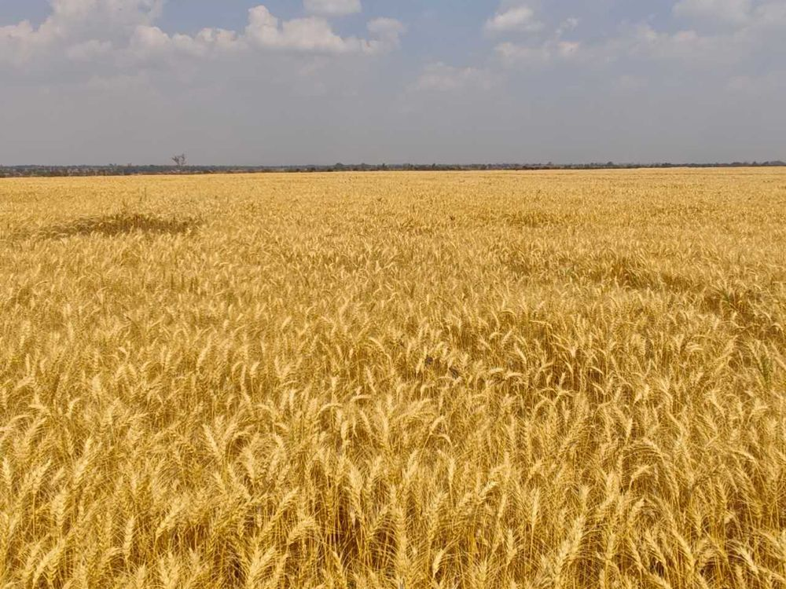

小麦WheatBléTrigo
在喷灌条件下种植，籽粒饱满，适合制粉及食品加工。Grown under irrigation for well-filled grain, suited to milling and food processing.Cultivé sous irrigation pour un grain bien rempli, adapté à la meunerie et à la transformation alimentaire.Cultivado sob rega para um grão bem formado, adequado à moagem e à transformação alimentar.
小麦询价Get a wheat quoteDevis pour le bléCotação de trigo →